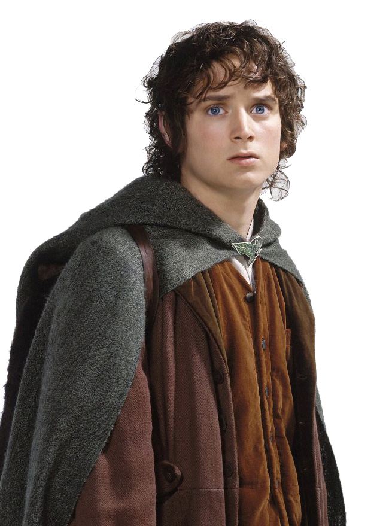

"Je vais jusqu'au bout, même si personne ne peut m'accompagner."
Biographies des Personnages

Frodon Sacquet - Incarné par Elijah Wood
Frodon Sacquet est un hobbit de la Comté qui se voit confier la tâche de détruire l'Anneau Unique.
Citation célébre
Alliances et Amis proches
- Sam Gamegie : Son jardinier et ami dévoué qui l'accompagne jusqu'au Mordor.
- Gandalf : Le guide et mentor qui l'aide à comprendre l'importance de sa quête.
- Aragorn, Legolas et Gimli : Membres de la Communauté qui lui offrent soutien et protection.
Rôle dans la quête de l'Anneau
Frodon hérite de l'Anneau Unique de son oncle Bilbon et accpete la dangereuse mission de le détruire. Sa bravoure, sa résistance et sa volonté d'aller au-delà de ses propres peurs font de lui le héros de cette quête.
Traits de Caractère
- Courageux et humble
- Dévoué et loyal
- Résilient face aux épreuves
Chronologie Personnelle
- Naissance : 22 septembre 2968 du Troisème Âge
- Acquisition de l'Anneau : En 3001, hérite de l'Anneau Unique
- Formation de la Communauté de l'Anneau : Début de quête en 3018
- Destruction de l'Anneau : Accomplissement de sa mission en 3019
Arme et Objet Spécifique
- Dard : Une épée elfique lumineuse qui lui est offerte par Bilbon, capable de détecter les Orques à proximité.
- Mithril : Armure légère, rare et précieuse, également cadeau de Bilbon.
Origines et Peuple
Originaire de la Comté, Frodon est un hobbit typique par sa taille, son amour pour la nature et sa vie simple. Sa destinée le conduit pourtant bien loin de son pays d'origine.
Anecdotes et Faits Divers
Frodon porte une cicatrice invisible laissée par la dague du Roi-Sorcier à Amon Sûl, une blessure qui le tourmente pendant de nombreuses années.
Évolution du Personnage
Au début de son voyage, Frodon est plein d'espoir et d'innocence, mais la charge de l'Anneau et les épreuves du Mordor le marquent profondément. Il finit par partir pour les Havres Gris, incapable de vivre en pais en Terre du Milieu après sa quête.

Sam - Incarné par Sean Astin
Sam est un hobbit de la Comté, fidèle jardinier et ami de Frodon, qui l'accompagne dans sa quête pour détruire l'Anneau Unique.
Citations célébres
"Je ne peux pas le porter pour vous, mais je peux vous porter, vous !"
"Il y a du bon en ce monde, Mr Frodon, et il faut se battre pour cela."
Alliances et Amis proches
- Frodon Sacquet : Son ami le plus proche, qu'il accompagne jusqu'au bout pour l'aider à détruire l'Anneau.
- Gandalf : Le magicien qui encourage son courage et son dévouement.
- Aragorn : Le chef de la Communauté qu'il respecte pour sa bravoure et son sens du devoir.
Rôle dans la quête de l'Anneau
Sam est le soutien le plus loyal et dévoué de Frodon, se chargeant des provisions, l'encouragent et le protégeant contre les dangers de la quête. Sans lui, Frodon aurait sans doute échoué dans sa mission.
Traits de Caractère
- Courageux
- Loyal
- Simple et humble
Chronologie Personnelle
- Naissance : Né dans la Comté, fils du jardinier Hamfast Gamegie.
- Début de la quête : Rejoint Frodon et la Communauté de l'Anneau pour protéger la Terre du Milieu.
- Montagne du Destin : Accompagne Frodon jusqu'au sommet pour accomplir leur mission.
- Retour dans la Comté : Après la quête, retourne chez lui et devient maire de Hobbitebourg.
Arme et Objet Spécifique
- Sting : Utilise temporairement l'épée "Dard" appartenant à Frodon.
- Élixir d'eau d'Elven : L'eau de Lórien, qui lui est d'un grand soutien dans les moments difficiles de la quête.
Origines et Peuple
Sam est un hobbit de la Comté, né dans une famille modeste de jardiniers. Les hobbits sont connus pour leur amour de la paix, de la nature, et de la simplicité.
Anecdotes et Faits Divers
- Relation avec Frodon : Sa loyauté envers Frodon a inspiré de nombreux récits et chansons dans la Terre du Milieu
- Admiration pour les Elfes : Sam est fasciné par le monde des Elfes, et rêve de les rencontrer.
Évolution du Personnage
De simple jardinier, Sam devient un héros humble qui joue un rôle essentiel dans la destruction de l'Anneau. Son courage et son dévouement pour Frodon lui valent le respect et l'admiration des peuples libres de la Terre du Milieu.

Bilbon Sacquet - Incarné par Martin Freeman
Bilbon Sacquet est un hobbit de la Comté qui part à l'aventure avec une compagnie de nains pour reprendre leur royaume et trésor volé par le dragon Smaug.
Citations célébres
"Je ne connais pas la moitié d'entre vous à moitié que je le voudrais, et j'aime moins de la moitié d'entre vous à moitié aussi bien que vous le méritiez."
"Je suis en retard, en retard pour une aventure !"
Alliances et Amis proches
- Thorin Ecu-de-Chêne : Chef de l'expédition des Nains pour reprendre Erebor ; Bilbon développe un respect et une amitié complexe avec lui.
- Gandalf : Le magicien qui l'invite à partir à l'aventure et devient son mentor.
- Elrond : Seigneur de Fondcombe qui aide Bilbon et la compagnie des Nains.
Rôle dans la quête d'Erebor
Bilbon devient le "cambrioleur" de l'expédition des Nains. Il surmonte ses peurs, afronte le dragon Smaug et récupère l'Arkenstone, jouant un rôle clé dans la reconquête d'Erebor.
Traits de Caractère
- Curieux et Intrépide
- Loyal et Honnête
- Intelligent et Malin
Chronologie Personnelle
- Naissance : Né dans la Comté, au sein de la famille Sacquet.
- Départ pour l'aventure : Rejoint les Nains et Gandalf pour reprendre Erebor.
- Rencontre avec Gollum : Dans les Monts Brumeux, il trouve l'Anneau et trompe Gollum en résolvant ses énigmes.
- Retour dans la Comté : De retour chez lui, il devient une légende et rédige ses mémoires.
Arme et Objet Spécifique
- Dard : Une petite épée elfique qu'il trouve en chemin et utilise pour se défendre.
- Anneau Unique : Il trouve l'anneau dans la grotte de Gollum, ignorant son puvoir maléfique.
Origines et Peuple
Bilbon est un hobbit de la comté, issu de la famille Sacquet. Les hobbits sont connus pour leur amour du confort et des plaisirs simples.
Anecdotes et Faits Divers
- Premier hobbit aventurier : Bilbon est l'un des premiers hobbits à s'aventurer loin de la Comté, brisant les conventions de son peuple.
- Respect des Elfes : Il devient un invité de choix à Fondcombe, où il passe ses dernières années entouré des Elfes.
Évolution du Personnage
De hobbit sédentaire et prudent, Bilbon devient un aventurier courageux et respecté. Il gagne en sagesse et en expérience, et son aventure change profondément sa perception du monde et des autres peuples de la Terre du Milieu.
Gandalf le Gris - Incarné par Ian McKellen
Gandalf est un puissant sorcier qui guide et conseille la Communauté de l'Anneau.
Citations célébres
"Un magicien n'est jamais en retard, ni en avance d'ailleurs. Il arrive précisément à l'heure prévue."
"Tout ce que nous avons à décider, c'est ce que nous devons faire du temps qui nous est imparti."
"Vous ne passerez pas !"
Alliances et Amis proches
- Bilbon Sacquet : Leur amitié se développe lors de la quête d'Erebor, où Gandalf voit en lui un potentiel insoupçonné.
- Frodon Sacquet : Gandalf guide et conseille Frodon dans sa mission de détruire l'Anneau Unique.
- Aragorn : Allié de donfiance, Gandalf soutient Aragorn dans sa quête pour devenir roi.
- Saruman : Autrefois son mentor et chef du Conseil Blanc, leur relation s'effondre quand Saruman rejoint Sauron.
Rôle dans la quête d'Erebor
Gandalf identifie le danger que représente l'Anneau Unique et met en place la Communauté de l'Anneau pour le détruire. Il devient un guide pour Frodon et ses amis, affrontant de nombreux dangers et sacrifiant même sa vie dans les Mines de la Moria pour les protéger.
Traits de Caractère
- Sage et Perspicace
- Courageux et Dévoué
- Patient et Bienveillant
Chronologie Personnelle
- Arrivée en Terre du Milieu : Envoyé par les Valar pour contrer Sauron.
- Quête d'Erebor : Guide les Nains et Bilbon jusqu'à la Montagne Solitaire.
- Quête de l'Anneau : Joue un rôle central dans la découverte de l'Anneau et la formation de la Communauté.
- Renaissance en Gandalf le Blanc : Après sa bataille avec le Balrog, il revient avec des pouvoirs renforcés.
Arme et Objet Spécifique
- Glamring : Épée elfique qu'il obtient lors de la quête d'Erebor.
- Bâton de Magicien : Symbole de son pouvoir et de son rôle d'Istari (sorcier envoyé par les Valar).
Origines et Peuple
Gandalf est un Maia, un esprit ancien envoyé par les Valar pour protéger la Terre du Milieu contre Sauron. Sous sa forme humaine, il fait partie des Istari, un groupe de magiciens.
Anecdotes et Faits Divers
- Ami des Aigles : Gandalf est respecté par les Aigles Géants, qui l'aident à plusieurs reprises.
- Doyen des Hobbits : Sa proximité avec les hobbits est unique parmi les Istari, car il voit en eux un potentiel important pour changer l'histoire de la Terre du Milieu.
Évolution du Personnage
Gandalf passe de Gandalf le Gris à Gandalf le Blanc après sa victoire contre le Balrog. Ce changement marque une transformation de ses pouvoirs et de son autorité. Toujours sage et bienveillant, il devient plus résolu et intransigeant dans sa lutte contre les forces du Mal.

Aragorn - Incarné par Viggo Mortensen
Aragorn est un rôdeur du Nord, héritier de Gondor, qui joue un rôle crucial dans la lutte contre Sauron.

Legolas - Incarné par Orlando Bloom
Legolas est un elfe de la Forêt Noire, expert en tir à l'arc, qui rejoint la Communauté de l'Anneau pour détruire l'Anneau Unique.

Arwen - Incarnée par Liv Tyler
Arwen est une elfe de Fondcombe, fille d'Elrond, qui renonce à son immortalité pour épouser Aragorn et soutenir la lutte contre Sauron.

Gollum - Incarné par Andy Serkis
Gollum est une créature corrompue par l'Anneau Unique, qui guide Frodon et Sam vers le Mont Destin tout en cherchant à récupérer l'Anneau pour lui-même.

Thorin - Incarné par Richard Armitage
Thorin est un nain du peuple de Durin, qui se voit confier la tâche de reconquérir Erebor et son trésor des griffes du dragon Smaug.

Kili - Incarné par Aidan Turner
Kili est un jeune nain courageux qui rejoint la quête de son oncle Thorin pour reconquérir Erebor et son trésor.
Galadriel - Incarnée par Cate Blanchett
Galadriel est une elfe de Lothlórien, dotée d'une grande sagesse et de pouvoirs magiques, qui aide la Communauté de l'Anneau dans leur quête.
Tauriel - Incarnée par Evangeline Lilly
Tauriel est une elfe sylvestre, capitaine des gardes de la Forêt Noire, qui se distingue par son courage et son attachement à Kili, l'un des nains.

Sauron - Incarné par Sala Baker
Sauron est un seigneur des ténèbres qui forge l'Anneau Unique pour dominer la Terre du Milieu et cherche à le récupérer pour restaurer son pouvoir.

Gimli - Incarné par John Rhys-Davies
Gimli est un nain de la lignée de Durin qui rejoint la Communauté de l'Anneau, combattant avec loyauté et forgeant une amitié improbable avec l'elfe Legolas.
Éowyn - Incarnée par Miranda Otto
Éowyn est une noble du Rohan, déterminée et courageuse, qui se déguise en homme pour combattre au côté des siens et vaincre le Roi-Sorcier d'Angmar.
Site Web fait par Tiphaine Chapuis - Ecole Ada Tech School